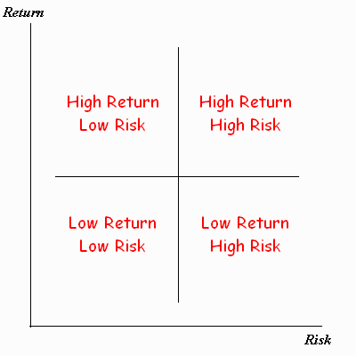

The Geometry of Investing |
Back to Projects List |
When choosing between investment opportunities, each has its own expected return and risk. Generally, the greater return you wish to receive, the more risk you have to take. You have a sum of money that you would like to invest, and you are trying to decide between two investments. What is the percentage of your money that should be invested in each to maximize return and minimize risk? Using mathematical formulas and interactive Geometer's Sketchpad tools, your goal is to develop an efficient portfolio mathematically.
When comparing between two securities in which an investor could put his/her money, there are two concerns an investor will have: risk of the investment and the possible return. Graphing this in the 1st quadrant of the coordinate plane could look like this:
Obviously, the best place for an investment to be is in the top left quadrant of this graph. It represents the greatest return with the least amount of risk.
| Download the complete unit here: | File Name |
Size |
| Compressed Zip File | The Geometry of Investing.zip | 318k |
| To Download: |
| Windows: right-click on the filename above and choose: "Save Target As..." |
| Mac/Apple: hold the CTRL key, click on the filename above, and choose: "Download to Disk..." |